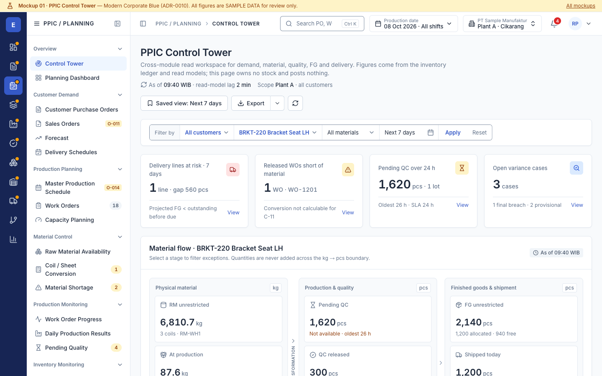
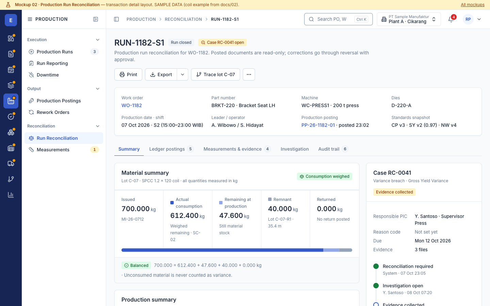
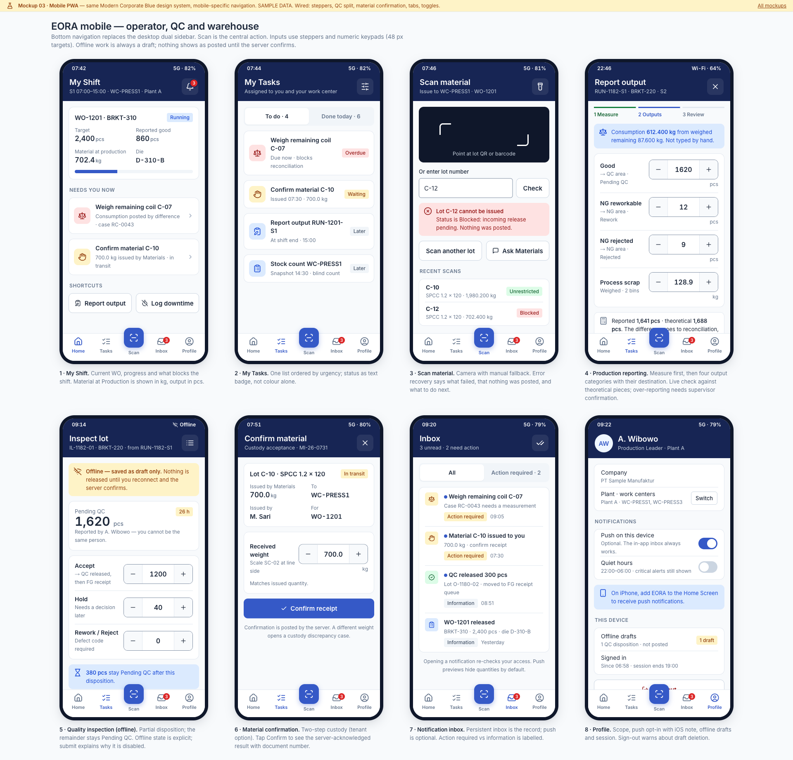

EORA Modern Corporate Enterprise Workspace
Dual sidebar navigation, one theme, Inter typography, shared components. All four mockups use the same token file, component CSS and centralized navigation config.

01 · PPIC Control Tower
Decision KPIs, MaterialFlowStrip with kg → pcs boundary, exceptions, due vs supply chart, stage detail tabs.

02 · Production Run Reconciliation
Transaction header, material and production summaries, three variance indicators with progressive disclosure, case and approval.

03 · Mobile PWA
My Shift, Tasks, Scan, Production reporting, QC inspection, Material confirmation, Inbox, Profile.
04 · EoraEnterprisePage list template
Reference layout: view-by tabs, search toolbar, segmented filter, compound stock cell, pagination, drawer, states.
Before vs after
Previous direction kept for comparison: Superseded v1 “Ledger Ink / Andon Signal”.
| Aspect | Before (ADR-0009, superseded) | After (ADR-0010) |
|---|---|---|
| Navigation | Single text rail, flat list, links to nowhere | Primary icon sidebar (13 modules) + grouped secondary sidebar from one config; RBAC demo; counts |
| Typography | IBM Plex Sans Condensed + IBM Plex Mono for every number; Barlow on mobile | Inter everywhere; tabular numerals in tables; monospace only for location codes |
| Theme | Paper/oxide desktop, graphite/concrete mobile, dark toggles | One theme: Modern Corporate Blue, semantic tokens, contrast-checked |
| Topbar | Context selects mixed with theme toggle | Breadcrumb, permission-aware search, period, company/plant switcher, bell, profile |
| Lists | Hand-written tables per page | EoraEnterprisePage: view-by tabs, toolbar, segmented filter, data table, pagination, drawer, states |
| Control Tower | Hairline “ledger” sections, text-heavy | 4 decision KPIs, grouped flow bands, exceptions table, one chart that answers a question, tabbed detail |
| Reconciliation | One long technical report | Tabs, section cards, formulas behind “Show calculation”, case panel with timeline and approval |
| Mobile | 3 screens, terminal-like | 8 screens, bottom nav with central Scan, steppers, offline and error recovery states |
| Business rules | Unchanged: no WIP, issue ≠ consumption, kg/pcs never summed, Pending QC ≠ FG, three variance indicators, no “loss” label without stock count, server-confirmed posting. | |